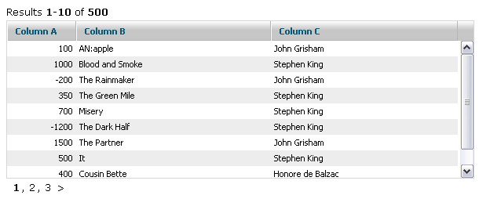
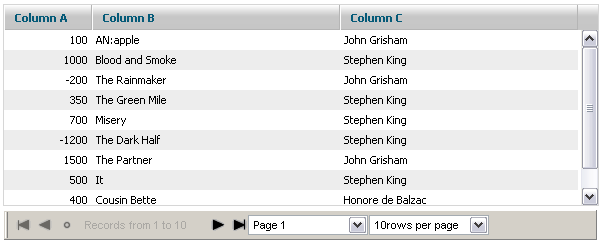
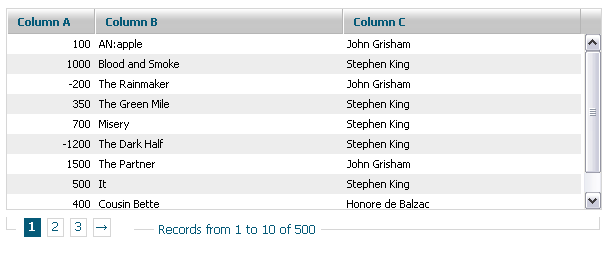
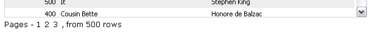
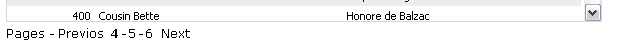

Customized paging
Existing skins
There are three predefined skins for the paging mode:
- "Default" - uses the configurable text line, requires two areas

- "Toolbar" - uses dhtmlxToolbar for navigation, requires a single area

- "Bricks" - uses a slick, web-like navigation, requires a single area

A skin can be assigned to the grid in the following way:
grid.setPagingSkin(name);
Customizing the default skin
The default skin creates two information lines, one of which provides the information about the current state of paging. The second one provides navigation controls.
Both lines can be configured through templates:
grid.setPagingTemplates(navigation_template,info_template)
The default templates are:
[prevpages:<: ] [currentpages:, ] [nextpages:>: ]
Results <b>[from]-[to]</b> of <b>[total]</b>
The following values are automatically replaced:
[from] - an index of the first row on the page;
[to] - an index of the last row on the page;
[total] - the total count of rows in the grid;
[current] - a link to the current page (or next | prev - the relative position can be used);
[prepages] - a link to the previous set of pages;
[nextpages] - a link to the next set of pages;
[currentpages] - renders the current set of pages.
All link markers allow to define the text as
[prev:text_in_normal_state:text_in_disabled_state]
You can use any combination of markers and static text|HTML inside a template:
mygrid.setPagingTemplates("Pages - [current:0] [current:+1] [current:+2] , from [total] rows","")

mygrid.setPagingTemplates("Pages - [prevpages:Previos:] [currentpages:-] [nextpages:Next:]","")

Customizing the "toolbar" skin
The "Toolbar" skin is based on dhtmlxToolbar. You can get reference to the toolbar object as
grid.aToolBar
And use any of toolbar related methods to change the toolbar object.
In addition to that, you can also configure which buttons (among the default ones) you expect to see in the toolbar:
grid..setPagingWTMode(navButtons,navLabel,pageSelect,perPageSelect)
Each variable can be true or false:
- navButtons - the first, prev, next, last buttons;
- navLabel - a label with the information about currently shown pages;
- pageSelect - a selectbox which allows to choose the current page;
- perPageSelect - a selectbox which allows to choose the count of rows per page.
Customizing the "bricks" skin
The "Bricks" skin requires an additional CSS file to be included:
ext/dhtlmxgrid_pgn_bricks.css
This file defines the look and feel of controls. You can adjust the necessary class in it in order to change their look and feel:
- .dhx_pbox - a border line around navigation controls;
- .dhx_pline - an area with page buttons;
- .dhx_page - a navigation button;
- .dhx_pager_info - an area with the information about the current position inside paging;
- .dhx_page_active - an active page button.
The file contains different styles for different grid skins:
- .dhx_pbox - the default skin;
- .dhx_pbox_modern - the modern skin;
- .dhx_pbox_light - the light skin;
- etc.
Internationalization
All text labels used in the "Toolbar" and "Bricks" skins are stored in a separate structure. So it might not cause any problems to support different languages.
grid.i18n.paging={
results:"Results",
records:"Records from ",
to:" to ",
page:"Page ",
perpage:"rows per page",
first:"To first Page",
previous:"Previous Page",
found:"Found records",
next:"Next Page",
last:"To last Page",
of:" of ",
notfound:"No Records Found" }
Creating a custom skin
If none of built in skins suits your needs, you can create a custom one. Basically you can attach some custom code to events of the grid, but paging provides more simple way to define custom skins.
Just define a grid method with the name:
grid._pgn_[NAME]
And call
grid.setSkin("[NAME]")
As a result this new grid method will be called each time when some paging information was changed and needs to be updated.
For example, we need to create a group of paging controls like this:
<input type="button" value="Previos">
<span>Current page: NN</span>
<input type="button" value="Next">
This can be done in the following way:
grid._pgn_custom=function(page,start,end){
/* page - the current page
start - the first visible row
last - the last visible row */
var html='<input type="button" value="Previos"><span>Current page: '+page+'</span><input type="button" value="Next">';
grid._pgn_parentObj.innerHTML=html;
grid._pgn_parentObj.childNodes[0].onclick=function() { // the previous button logic
grid.changePageRelative(-1);
}
grid._pgn_parentObj.childNodes[2].onclick=function() { // the next button logic
grid.changePageRelative(1);
}
}
grid.setPagingSkin("custom");
© DHTMLX, 2008